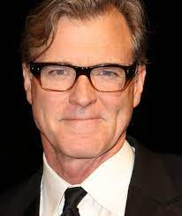

Nació en la ciudad de Longview, Texas, y creció en Texas City, Texas. John Lee Hancock obtuvo una licenciatura en la Facultad de Derecho en la Universidad de Baylor, Texas. También obtuvo una licenciatura en Inglés, en la misma universidad. Trabajó durante cuatro años para un estudio de abogados de Houston hasta que decidió mudarse a Los Ángeles para perseguir su sueño de convertirse en guionista de cine.
Ha dirigido películas como El novato (2002), con Dennis Quaid, y The Alamo (2004), con Billy Bob Thornton y nuevamente con Quaid.2 Su película más exitosa es el drama The Blind Side (2009), con Sandra Bullock, que ganó el Óscar a la Mejor Actriz, además de ser un extraordinario éxito de taquilla.34También ha ejercido como guionista en algunas de las películas dirigidas por él mismo, como The Alamo (2004) y The Blind Side (2009). También hay que incluir Un mundo perfecto (1993), dirigida y protagonizada por Clint Eastwood, y Medianoche en el jardín del bien y del mal (1997), dirigida de nuevo por Eastwood, con John Cusack y Kevin Spacey.
| Contáctame | Galería | Más info | John Lee Hancock | Galería John Lee | Robert D.Siegel | Galería Robert | Formulario | Michael Keaton | |